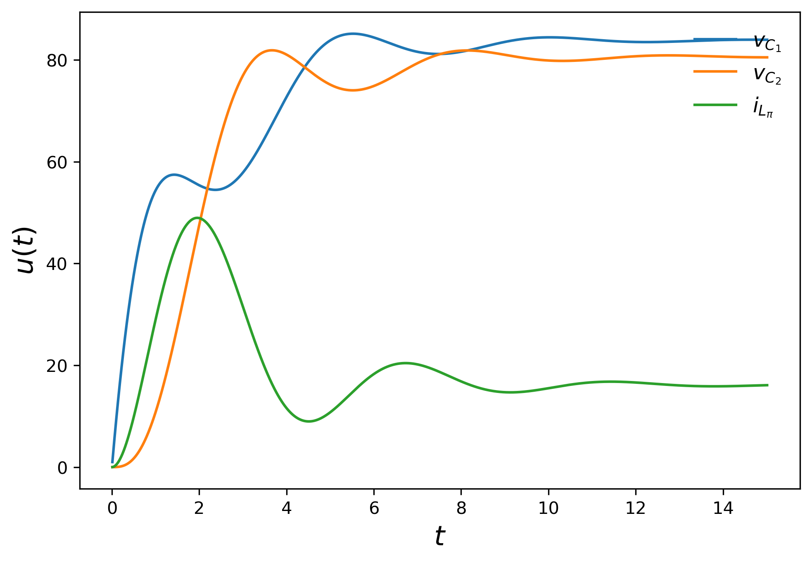
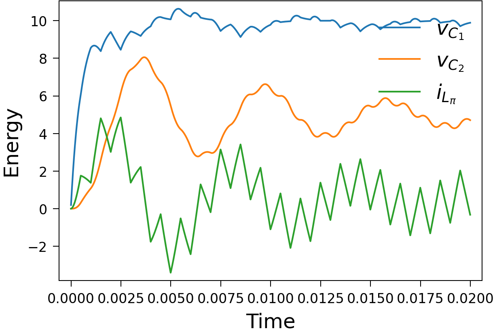

Parallel-in-time simulation for multi-modal energy systems¶
This project deals with the parallel-in-time simulation of energy systems. Components of, for example, an DC-DC microgrid are:
the pi-line, and
the buck (step-down) converter.
They can be modelled as an system of ordinary differential equations. A more detailed explanation of them can be found below.
Since control techniques are very common to control the dynamics in such systems, discrete events arise in the solution deteriorating the accuracy. In order to handle such discontinuities the switch estimator is developed. After convergence in each time step the state function is proved to have a sign change. If this is the case, interpolation will be done to interpolate the dynamics of the state function. Then, a root-finding method is applied to find the time point of the event. SDC can now be restarted with a new step size such that the event occurs on the end of the subinterval. This inherently improves the accuracy of the solution.
The switch estimator is not restricted to application in the field of power system modelling but also intended to use it in other fields where discrete events occur in the solution, and the time point of the events are not known. Thus, in this project also some other experiments regarding discontinuity handling can be found.
What are switching processes in power systems?¶
Buck converters emulate the power consumption behavior of a household. They convert a large input voltage into a smaller target output voltage, which is done by multiple switchings. In each step, the actual output value will be compared with a target output voltage. Based on the error, the duty cycle is recalculated to control the switching process. Here, the switching is typically down after a fixed number of time steps. The battery drain model is not a component in a microgrid, but rather a test case to investigate how SDC behaves with a discontinuity. Here, the discontinuity depends on the system dynamics itself and the time point of the event is not known. Below a more detailed explanation of the battery draining model is provided.
Pi-line¶
The plot below shows the simulation of the pi-line model. There can be seen the two voltages along the capacitor and the current along the coil. Both the voltages and the current settle down over the time. As a background information: the pi-line model serves as transmission line, which transports the energy. The behavior which can be seen in the plot is what we would expect.
{kind=link}
Buck converter¶
In the test case of the buck converter there are multiple switches in the considered time domain. In the so-called open-loop control, a controller monitors the actual output voltage. It compares the output with a target output voltage. Regularly, after a fixed number of time steps, the duty cycle to control the switching is recalculated based on the error. The simulation illustrates the switching behavior in the simulation: The voltage values settle down between the reference.
{kind=link}
Battery drain model¶
This model is a simple example for system internal switching, which means switching depends on system dynamics. When the capacitor voltage drops below the reference value, the circuit switches to the voltage source. An illustration of the process is clarified in the plot below: The capacitor voltage drops down, and after switching the voltage value along the capacitor no longer changes.